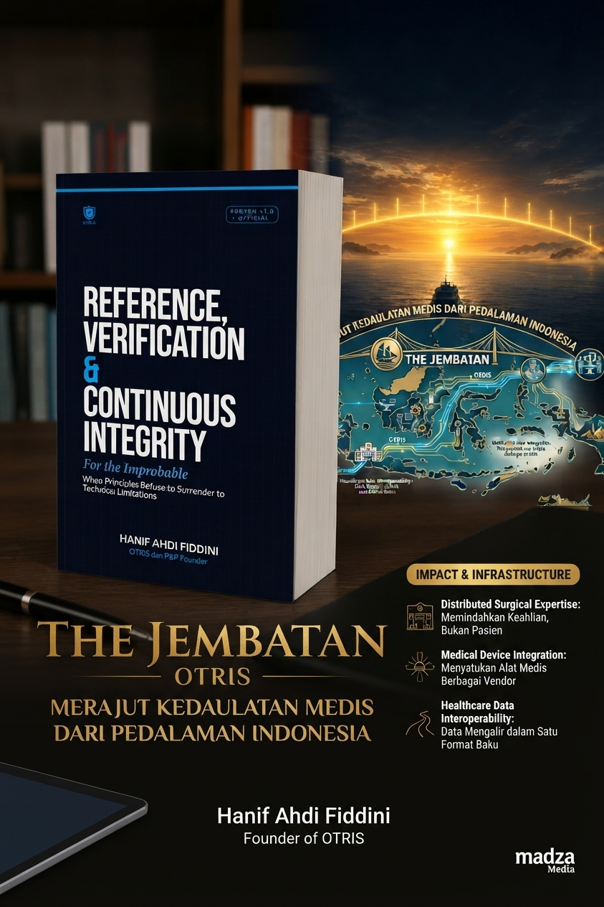

Interoperabilitas: Menghubungkan Perangkat Medis Tanpa Mengganti Semuanya
Mitos Modernisasi: Haruskah Semua Perangkat Diganti?

Banyak fasilitas kesehatan menghadapi tantangan besar saat melangkah menuju transformasi digital. Ketika standar pengiriman data kesehatan nasional—seperti SATUSEHAT—dan kebutuhan integrasi internal makin mendesak, anggapan umum yang sering muncul adalah: “Untuk membangun sistem medis yang saling terhubung, kita harus memperbarui seluruh jajaran perangkat medis dengan tipe terbaru.”
Pendekatan ini tidak hanya menelan biaya investasi (CAPEX) yang sangat besar, tetapi juga sering kali menyisakan disrupsi operasional. Perangkat medis eksisting yang masih memiliki performa klinis prima, terkalibrasi presisi, dan dapat diandalkan akhirnya menjadi usang lebih cepat dari umur teknis aslinya hanya karena masalah ketiadaan antarmuka digital modern.
Pertanyaannya: Apakah modernisasi harus selalu mengorbankan investasi yang sudah ada?
Pendekatan Interoperabilitas Berbasis Bridge & Translation
Jawabannya terletak pada interoperabilitas yang adaptif. Daripada mengganti perangkat secara total (rip-and-replace), pendekatan modern berfokus pada pembangunan jembatan komunikasi data (data bridging).
Sebagian besar perangkat medis—mulai dari monitor pasien (patient monitor), mesin anestesi, hingga alat diagnostik—sebenarnya memancarkan data telemetry melalui protokol standar industri atau antarmuka serial (seperti RS-232, RS-485, atau LAN lokal). Tantangannya adalah data tersebut sering kali terkurung dalam format proprietary (tertutup) atau belum terstruktur secara baku.
Dengan menerapkan lapisan edge integration gateway:
Protocol Capturing & Translation: Mesin menerjemahkan sinyal mentah (raw serial output) dari perangkat warisan (legacy) secara real-time.
Canonical Data Modeling: Data diubah ke dalam struktur baku internasional seperti HL7 (Health Level Seven) dan FHIR (Fast Healthcare Interoperability Resources).
Secure Pipeline Delivery: Data yang sudah terintegrasi dikirimkan secara aman ke sistem EMR/SIMRS maupun platform kolaborasi klinis tanpa mengubah cara kerja alat medis itu sendiri.
Tiga Keuntungan Utama Pendekatan Integrasi Adaptif
Efisiensi Anggaran (Cost Efficiency): Menghindari pembelanjaan modal berlebih untuk peremajaan unit medis yang belum saatnya diganti. Rumah sakit dapat mengalokasikan anggaran untuk pengembangan kapasitas layanan lain.
Keberlanjutan Operasional (Operational Continuity): Tenaga medis dan operator tidak perlu beradaptasi kembali dengan alur kerja (workflow) alat baru. Pengalaman klinis yang sudah established tetap terjaga, sementara aliran data di belakang layar bekerja secara otomatis.
Skalabilitas Bertahap: Proses integrasi dapat dilakukan secara modular—dimulai dari unit krusial seperti Ruang Operasi (OK) atau ICU, lalu diperluas ke ruang perawatan secara bertahap tanpa mengganggu operasional harian.
Menghormati Infrastruktur, Mengutamakan Pasien
Teknologi kesehatan sejatinya ada untuk melayani keselamatan manusia, bukan sebaliknya. Menghormati investasi infrastruktur yang ada di fasilitas kesehatan adalah bentuk tanggung jawab dalam inovasi.
Dengan menghubungkan sistem yang terpisah (silo) menjadi ekosistem yang terintegrasi, kita tidak hanya menghemat dana dan waktu, tetapi juga memastikan setiap keputusan klinis didukung oleh data medis yang cepat, akurat, dan menyeluruh.
Bacaan Terkait & Landasan Metodologi
Konektivitas antarsektor hanyalah langkah awal. Tantangan mendasar berikutnya dalam integrasi perangkat medis adalah memastikan bahwa data yang ditangkap dan diterjemahkan tetap valid, presisi, serta terverifikasi dari titik asal (edge) hingga layar monitor klinis.
Untuk eksplorasi mendalam mengenai metodologi pengujian, validasi data real-time, dan mekanisme kontrol kualitas pada antarmuka perangkat medis, Anda dapat mempelajari manuskrip rujukan kami: Reference, Verification & Continuous Integrity.
Langkah Selanjutnya
Bagaimana strategi fasilitas kesehatan Anda dalam menjembatani perangkat medis legacy dengan standar interoperabilitas modern?
Jika Anda ingin mendiskusikan implementasi teknis, eksplorasi protokol integrasi, atau arsitektur konektivitas di ruang operatif dan kritis, hubungi tim kami melalui info@otris.id atau jelajahi lebih lanjut di OTRIS Media.
Untuk eksplorasi mendalam mengenai metodologi pengujian, validasi data real-time, dan mekanisme kontrol kualitas pada antarmuka perangkat medis, Anda dapat mempelajari manuskrip rujukan kami melalui tautan berikut:
📖 https://play.google.com/store/books/details?id=xxgXEgAAQBAJ